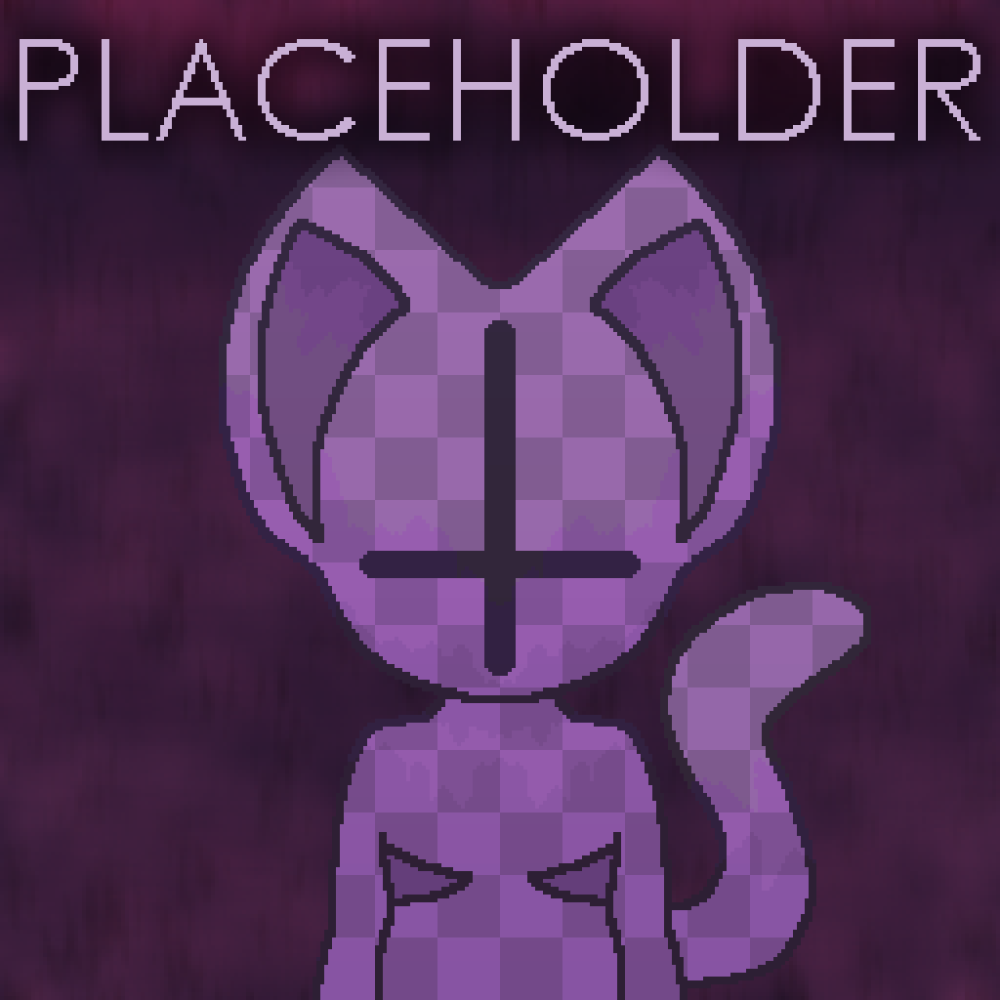
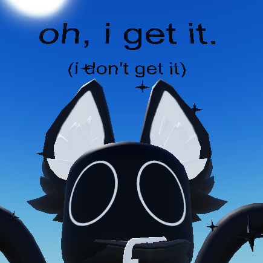
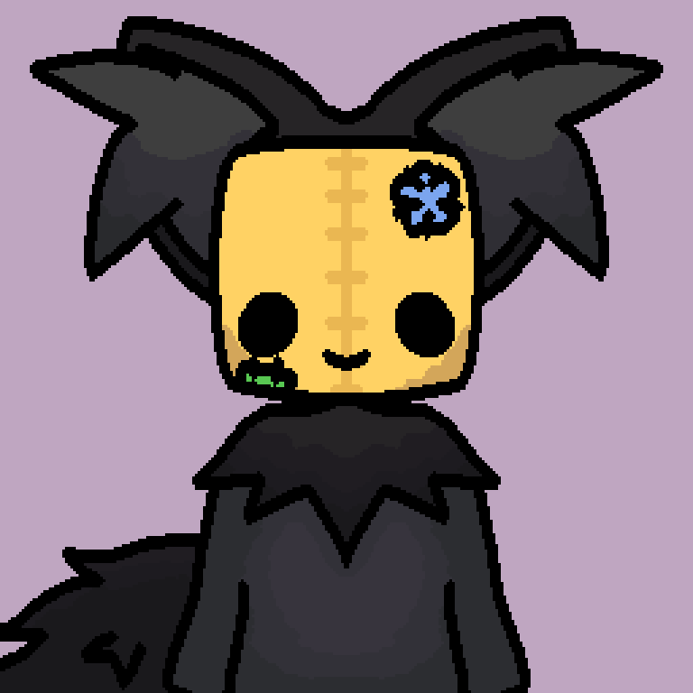
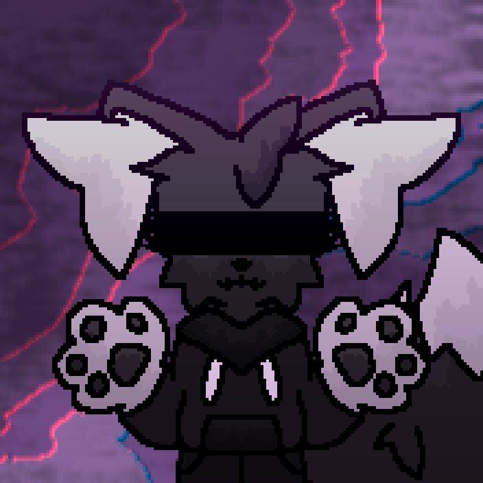
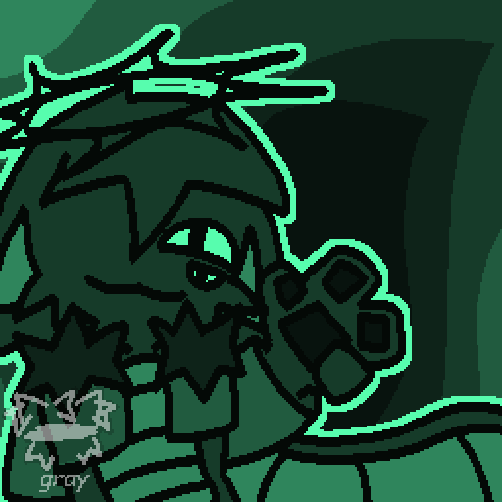
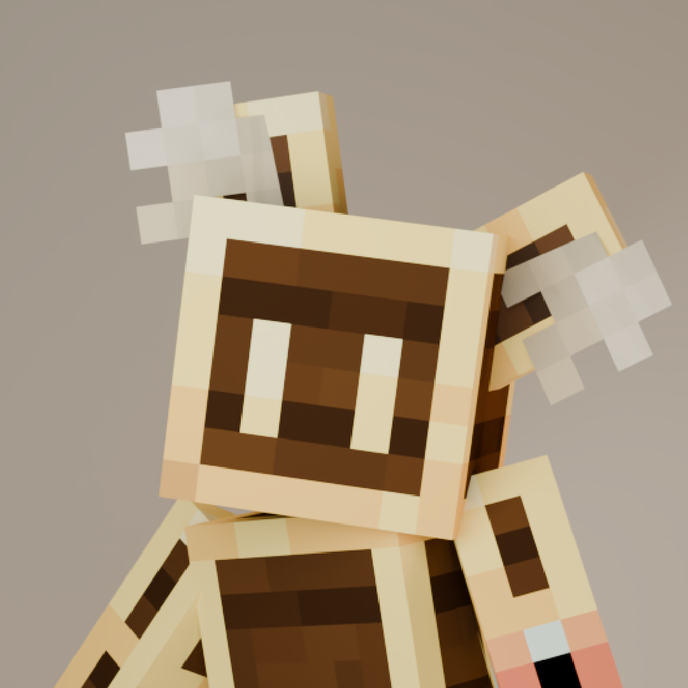
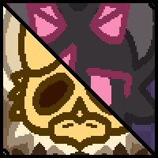
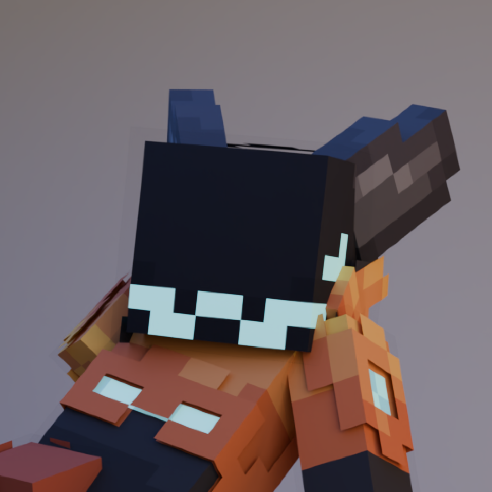
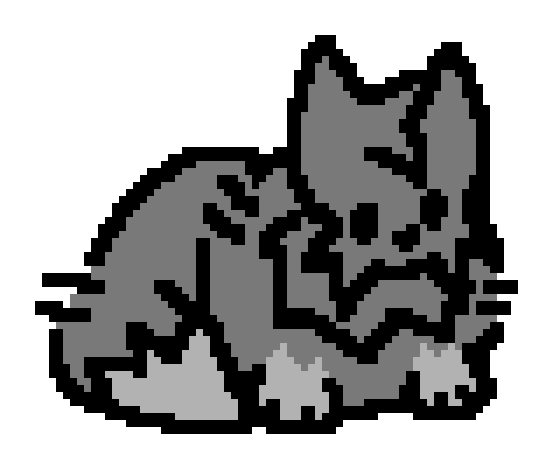

WARNING
heyyyy hiiii theres a lotta missing stuff on this page sorry :[
also the galleries REALLY don't work on mobile sorry about that as well
overall i plan to make proper refs for everyone and newer pfps for them but for now im making do with what i have on hand
Characters
<---{ INKBLOT }--->
25 Total Characters

Abyss
Abyssal Creature
Ethologus
Abyssal Creature
Perditus
Abyssal Creature

Stultus
Abyssal Creature
Atlas
A.R.F.
Carb
A.R.F.

Suvo
A.R.F.
Codex
Astra
Cei
Desolation
Dawn
Desolation
Noir
Desolation
Specter
Desolation
Inkblot
EXALTED
Splotch
EXALTED
Bastion
Fortress

Gray
LOST
Chroma
Prism
Petal
Sakura

Spawn
S.R.C.
Urchin
S.R.C.
VM
S.R.C.
Creature
Unaffiliated
Vera & Seraph
Unaffiliated
Zero*
Unaffiliated
<---{ MISCELLANEOUS }--->
8 Total Characters

BRASS
Minecraft-Based OC
Courier
OneShot OC

Delta & Amber
Art Fight OCs
Kurushimi
Pokemon OC
Lux
Hollow Knight OC
Placeholder
Universal OC

Starmap
Minecraft-Based OC

NAME
PRONOUNS
SPECIES
AFFILIATION
HEIGHT
Hey there! If you're reading this, something messed up while loading the page.
Please click on one of the characters in the above sections. If that still doesn't work, try refreshing the page or using another browser.